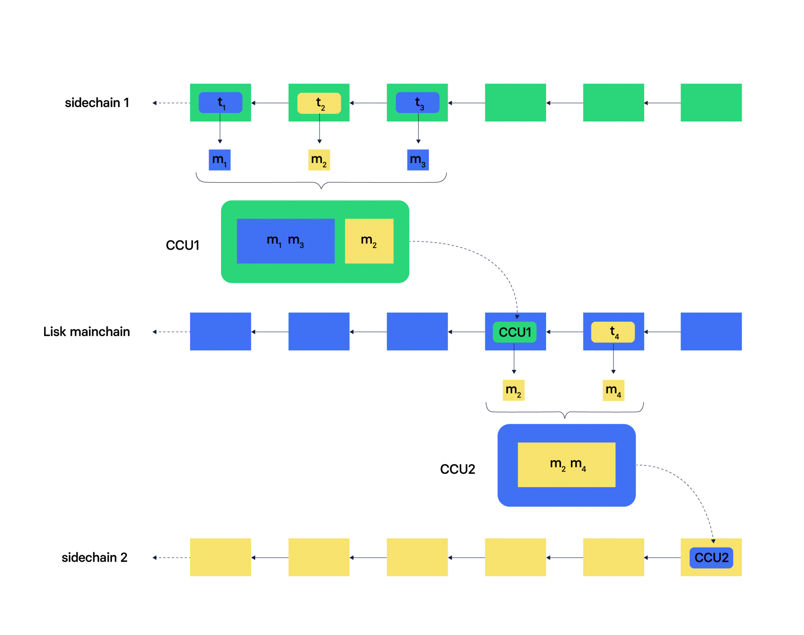

Lisk Interoperability
The Lisk interoperability solution allows blockchain to blockchain communication by using the paradigm of cross-chain certification.
Basically, cross-chain certification means that information from one chain is submitted to another chain utilizing a signed object called a certificate. The information is transmitted across chains by issuing a Cross-Chain Update transaction, aka CCU, including a certificate, that verifies the correctness of the data in the CCU.
A CCU can contain multiple cross-chain messages. Cross-chain messages contain commands which can be executed on the opposite chain, what can mutate the state of this chain in response to state changes that happened on the sending chain.
In the diagram above, Alice performs a cross-chain token transfer from her account on the sending chain to Bob’s account on the receiving chain.
For this, she sends a cross-chain token transfer transaction, t, on the sending chain.
When this transaction is included, her account on the sending chain is debited.
Simultaneously, a corresponding cross-chain token transfer message, m, containing all the relevant information is emitted.
This message is included in a cross-chain update transaction (CCU), which is sent to the receiving chain.
When the transaction is included, Bob’s account is credited.
Cross-chain messages are, however, not limited to token transfers.
Similar to transactions, cross-chain messages have an asset property.
Therefore, when building a blockchain application with the Lisk SDK, you can create custom cross-chain messages by defining the content of the asset property as needed.
For example, you could create a custom cross-chain message that contains some authenticated information from an oracle chain in its asset property.
|
Terminology summary
- Transaction
-
An envelope object for a command, see Understand blockchain, Transactions.
- Cross-chain transaction (CCT)
-
Transaction generating one or more cross-chain messages.
- Cross-chain update (CCU)
-
A CCU, aka "Cross-chain update transaction" is a special transaction containing cross-chain messages, certified by validators.
- Command
-
Trigger of a state transition in the same chain, see Modules and commands.
- Cross-chain command (CCC)
-
Trigger of a state transition coming from another chain.
- Cross-chain message (CCM)
-
An envelope object for a cross-chain command.
- Certificates
-
Certificates contain information from finalized block headers that are signed by a large portion of validators from a certain chain, and thus authenticate a finalized state of that chain. They are the fundamental components of the cross-chain certification paradigm for the Lisk ecosystem.
Cross-chain network topology
The cross-chain network topology describes arrangements of blockchains in the Lisk ecosystem.
The network topology between blockchains in the Lisk ecosystem is a structured star topology:
-
structured means, that the network is self-organizing in a predefined structure.
-
star describes the predefined structure of the Lisk blockchain ecosystem.[1]

As shown by the image above, a Lisk blockchain can become interoperable to any other blockchain in the Lisk ecosystem, including the Lisk Mainchain, simply by registering itself to the Lisk Mainchain.
All communication to other sidechains is routed through the Lisk Mainchain.
|
What is the maximum of connected sidechains to the Lisk Mainchain?
The maximum of sidechains being simultaneously connected to the Lisk mainchain is currently around 3,5 million. The number is only capped by the maximum number of CCU transactions, that the Lisk Mainchain can integrate per day. |
Mainchain & sidechains
As explained in section Cross-chain network topology above, the Lisk blockchain network is structured in two kinds of network particpants: the Lisk Mainchain, and sidechains, which are connected to each other via the Mainchain.
Therefore, there are two different ways for cross-chain communication:
- Sidechain-to-Mainchain (& vice versa)
-
Involves creation of one CCU on the sending chain, that is posted to the receiving chain.
- Sidechain-to-Sidechain
-
Involves creation of two CCUs:
-
CCU from sending chain to Mainchain
-
CCU from Mainchain chain to receiving chain
-

On sidechain 1, three transactions are included, where each one emits one cross-chain message, denoted by m1, m2, and m3.
The color of a transaction or cross-chain message is always the one of the receiving chain, except for a cross-chain update transaction whose color is the one of the sending chain.
All three cross-chain messages are delivered in one cross-chain update transaction, CCU1, to the mainchain, where m1 and m3 are processed, but not m2.
Later on, m2 is delivered to sidechain 2 by a cross-chain update transaction, CCU2, from the mainchain to sidechain 2.
This cross-chain update transaction contains an additional cross-chain message, m4, emitted by the transaction t4 included in the mainchain.
|
The Role of the LSK Token
The LSK token is the only token that can be transferred to every chain within the Lisk ecosystem. It is the default token for transaction fees on sidechains, but it is possible to configure a sidechain token for the transaction fees. As the LSK token is listed on several exchanges, it will in most cases be the initial token that a user acquires within the Lisk ecosystem. Once a user possesses some LSK tokens, they can exchange them for other sidechain tokens, e.g., on a decentralized exchange (DEX) sidechain. |
Example of Interoperability Usage
Let’s look at an example to get a better impression of the capabilities of our interoperability solution. All the following steps described here can also be seen in the image below.
Assume we have an exchange chain, a prediction market chain, and an oracle chain connected to the mainchain. Then, a user story could look like this:
Assume a user has some LSK tokens on the mainchain, and they would like to bet on the prediction market chain, but this chain requires a special token for betting. Therefore the following actions would apply:
-
The user sends some of their LSK tokens to the exchange chain via a cross-chain token transfer message.
-
The LSK tokens are then swapped for the betting tokens.
-
Subsequently, the betting tokens are then sent from the exchange chain to the prediction market chain via a cross-chain token transfer message.
-
On the prediction market chain, the user bets on the winner of the Nobel Prize in Physics.
-
After the announcement of the Nobel prize winner, the oracle chain sends the result to the prediction market chain via a custom cross-chain message.
-
The user then receives their winnings as they made the correct guess.
Example of interoperability between the Lisk mainchain and three sidechains.
-
The steps
2),4), and6)are transactions performed within a single chain. -
The steps
1),3), and5)are cross-chain messages. -
The cross-chain messages
3)and5)are sidechain-to-sidechain cross-chain messages which are routed via the mainchain. -
The cross-chain message
1)is a mainchain-to-sidechain cross-chain token transfer message.
Another example use case for Lisk interoperability was presented at Lisk.js 2021 by Alessandro Ricottone:
Check out the Lisk YouTube channel to see more videos about Lisks interoperability solution.